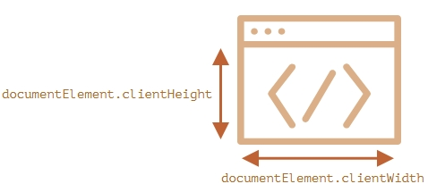

Высота, ширина браузера, документа узнаётся при помощи свойств document.documentElement который
соответствует тегу <html>. Однако есть дополнительные методы и особенности, которые необходимо учитывать.
Чтобы получить ширину/высоту окна, можно взять свойства clientWidth/clientHeight из document.documentElement:

Не window.innerWidth/Height
Разные показания, window.innerWidth/Height включает в себя полосу прокрутки
В большинстве случаев нам нужна доступная ширина окна: для рисования или позиционирования. Полоса прокрутки «отъедает» её часть. Поэтому следует использовать documentElement.clientHeight/Width.alert( window.innerWidth ); // полная ширина окна alert( document.documentElement.clientWidth ); // ширина окна за вычетом полосы прокрутки
Чтобы надёжно получить полную высоту документа, нам следует взять максимальное из этих свойств:
let scrollHeight = Math.max(
document.body.scrollHeight, document.documentElement.scrollHeight,
document.body.offsetHeight, document.documentElement.offsetHeight,
document.body.clientHeight, document.documentElement.clientHeight
);
alert('Полная высота документа с прокручиваемой частью: ' + scrollHeight);
Обычные элементы хранят текущее состояние прокрутки в elem.scrollLeft/scrollTop. Подразумевается, что elem это document.documentElement. Так же есть свойства window.pageXOffset/pageYOffset:
alert('Текущая прокрутка сверху: ' + window.pageYOffset);
alert('Текущая прокрутка слева: ' + window.pageXOffset);
По историческим причинам существует два аналога window.pageXOffset и window.pageYOffset:
- window.pageXOffset – то же самое, что и window.scrollX.
- window.pageYOffset – то же самое, что и window.scrollY.
Для прокрутки страницы из JavaScript её DOM должен быть полностью построен.
Например, если мы попытаемся прокрутить страницу из скрипта, подключенного в <head>, это не сработает.
Обычные элементы можно прокручивать, изменяя scrollTop/scrollLeft.
Мы можем сделать то же самое для страницы в целом, используя document.documentElement.scrollTop/Left (кроме основанных на старом WebKit (Safari), где, как сказано выше, document.body.scrollTop/Left).
Есть и другие способы, в которых подобных несовместимостей нет: специальные методы window.scrollBy(x,y) и window.scrollTo(pageX,pageY).
window.scrollTo({
top: 100,
left: 0,
behavior: "smooth"
});
window.scrollTo({
top: 100,
left: 0,
behavior: 'smooth'
});
window.scrollBy({
top: 100,
left: 0,
behavior: 'smooth'
});
Вызов elem.scrollIntoView(top) прокручивает страницу, чтобы elem оказался вверху. У него есть один аргумент:
this.scrollIntoView(options)
this.scrollIntoView({
behavior: "smooth",
block: "end",
inline: "nearest"
});
Чтобы запретить прокрутку страницы, достаточно установить document.body.style.overflow = "hidden"
Минусом такого подхода является то, что пропадает полоса прокрутки, из-за чего текст может сместиться.
Плюсом данного подхода является то, что можно заблокировать от прокрутки сам документ, а прокручивать какой-нибудь отдельный элемент.
Получение размеров:
let scrollHeight = Math.max(
document.body.scrollHeight, document.documentElement.scrollHeight,
document.body.offsetHeight, document.documentElement.offsetHeight,
document.body.clientHeight, document.documentElement.clientHeight
);